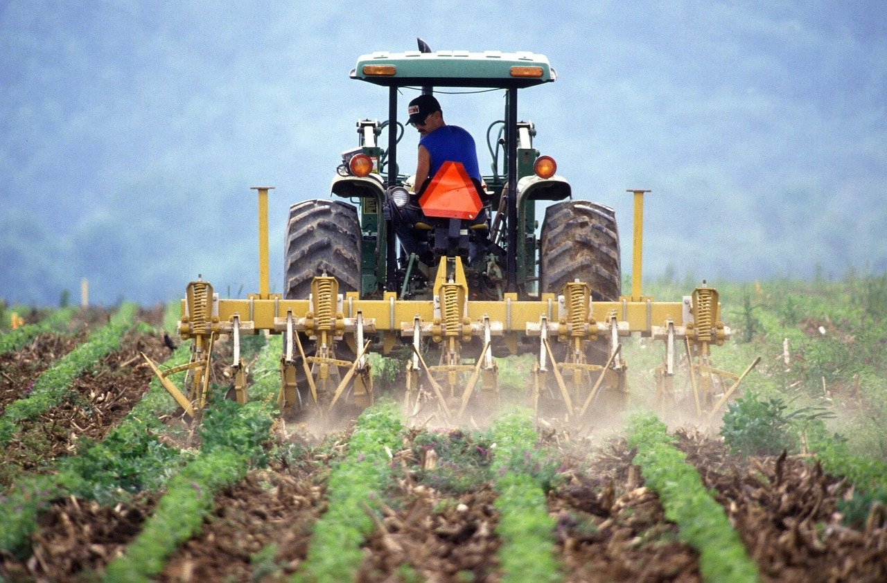
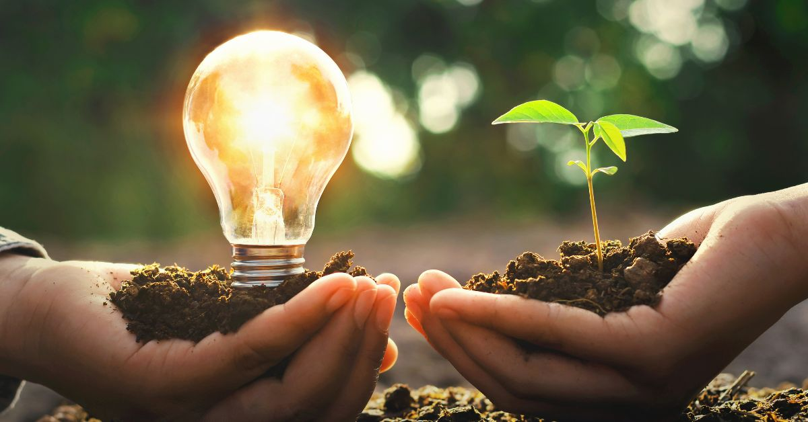
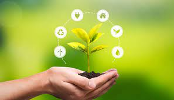
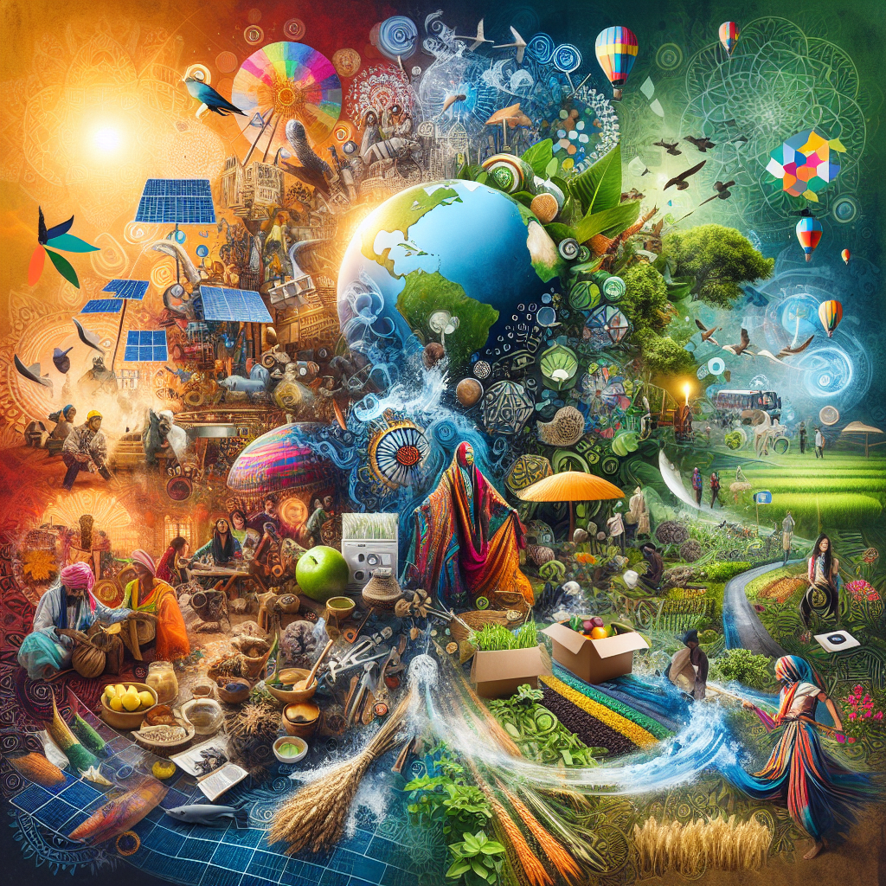

A importância da cultura e da sustentabilidade
A cultura preserva nossas raízes e tradições, enquanto a sustentabilidade protege o meio ambiente para as futuras gerações. Unindo essas forças, promovemos uma vida mais equilibrada e conectada ao campo e à cidade.
Expressões Culturais e Sustentáveis



